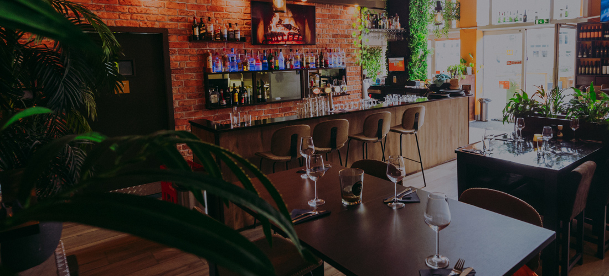
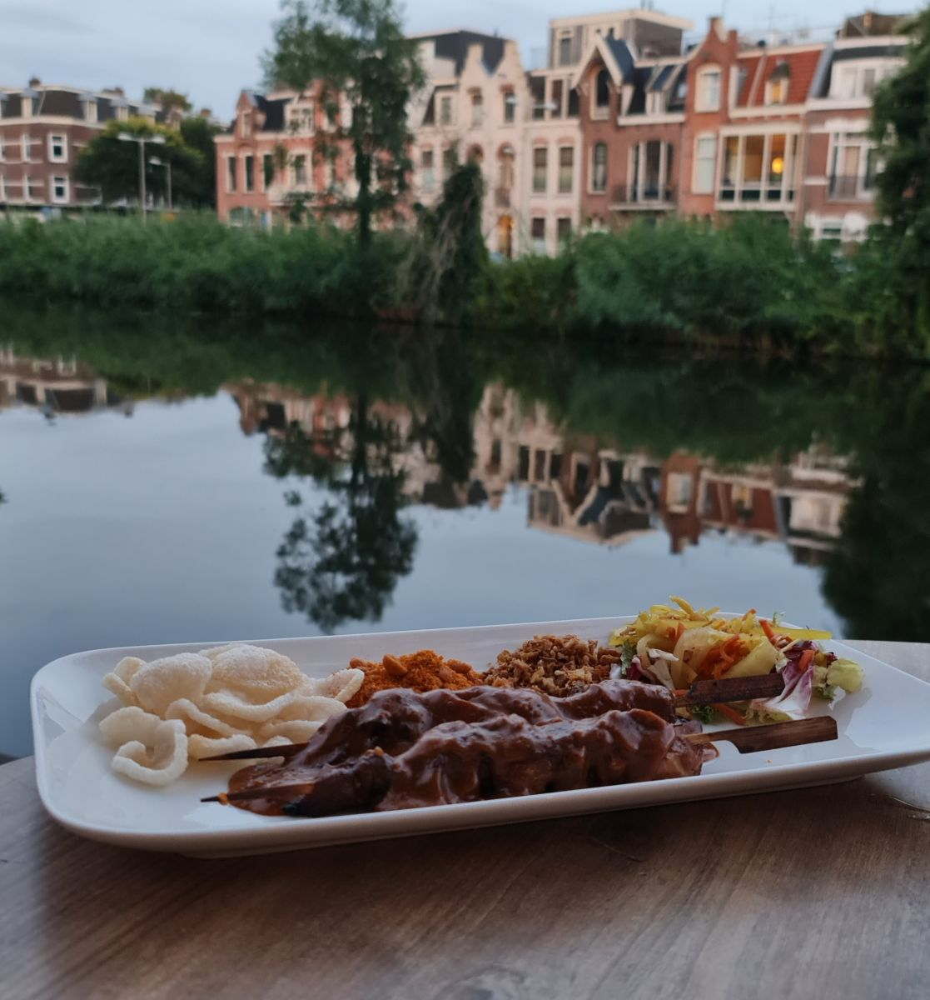
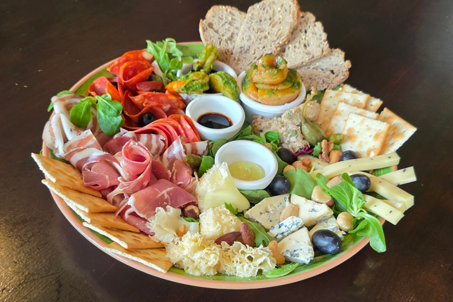
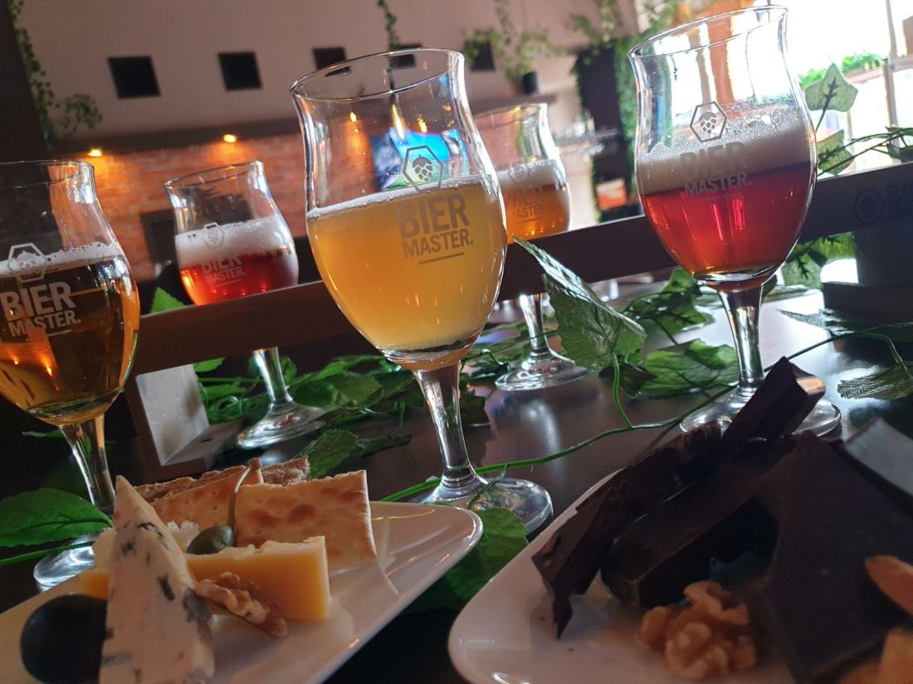
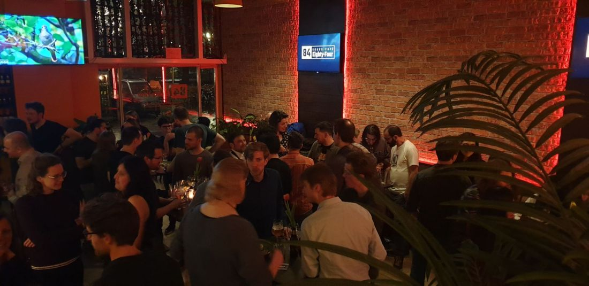
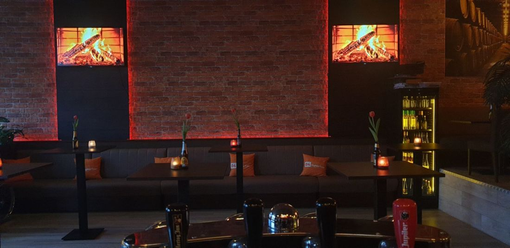

4dec
vrijdag
Music Madness Quiz, Winter Edition
Onze eigen, volledig zelfbedachte muziekquiz, los van de maandelijkse Quiz-Nights. Zes rondes vol herkenbare hits, slimme twists, iconische intro's, eigenwijze covers en tijdloze klassiekers.
Oranje-Vrijstaatkade 25 · Amsterdam-Oost
Just good food, great drinks & good times. Lunch, diner of een borrel op het zonnige terras aan het water bij Oostpoort.
Openingstijden staan onderaan de pagina

Eighty-Four is de perfecte plek om te ontspannen, te borrelen of uitgebreid te eten. Onze keuken serveert vernieuwende gerechten met een vertrouwd karakter: smaakvolle burgers, verse vis, salades en lekkere bites. Daarbij schenken we uitstekende wijnen en een mooie selectie speciaalbieren.
Tijdens sportwedstrijden staan onze schermen aan, zodat je samen met vrienden kunt juichen voor je favoriete team. En voor tussendoor: vers gemaakte fruit- en groentesmoothies, desgewenst met een extra proteïne-shot.

Een favoriet bij velen
Bij Eighty-Four roken we onze zalm zelf, met aandacht, tijd en een vleugje vakmanschap. 's Ochtends wordt de zalm vers aangeleverd en wij bereiden hem in onze eigen rookoven. Het resultaat: een boterzachte structuur, subtiele rooksmaak en een fris zilte balans.
In talloze Google-reviews wordt hij geroemd om zijn verfijnde smaak en ambachtelijke bereiding. Perfect als voorgerecht, op een frisse salade, op zuurdesem met mierikswortelsaus of gewoon puur.
Bekijk de menukaart
Onze Pub Quiz is een begrip in Amsterdam-Oost geworden. Daarnaast organiseren we eigen muziekquizzen en speciale avonden.
4dec
vrijdag
Onze eigen, volledig zelfbedachte muziekquiz, los van de maandelijkse Quiz-Nights. Zes rondes vol herkenbare hits, slimme twists, iconische intro's, eigenwijze covers en tijdloze klassiekers.
19dec
zaterdag
Een extra feestelijke editie: 100 uitdagende en verrassende vragen in 10 quizrondes, een flinke dosis gezelligheid en kerstsfeer. Reserveer je team voor 19 december.
27dec
zondag
Na 19:00 uur is onze locatie alleen toegankelijk voor genodigden. Ook zin in zo'n dag? Bekijk de mogelijkheden voor je eigen feest.
Stel een team samen van maximaal vier personen en ga de strijd aan. Een enthousiaste quizmaster leidt de avond, met 100 vragen over actualiteit, geschiedenis, muziek en cultuur, en natuurlijk een muziekronde en een beeldronde op onze schermen.
Speeddate met FlitsDate. Meerdere keren per maand ontvangen we de mensen van flitsdate.nl voor hun speeddate-event. Op die avonden zijn er na 20:00 uur binnen beperkt plaatsen.

Een leuke afsluiting van een vergaderdag, een bedrijfsuitje, vrijgezellenavond of vriendenweekend. Met onze brede bierkaart proef je speciaalbieren uit verschillende streken, en bij elke ronde hoort een bijpassende bite. Vanaf 4 personen.
5 rondes: 5 speciaalbieren en 5 happen, ongeveer 70 minuten
€29,50 p.p.
€27,50 p.p. bij meer dan 10 personen
8 rondes: 8 speciaalbieren en 8 happen, ongeveer 120 minuten
€42,50 p.p.
€39,95 p.p. bij meer dan 10 personen
Bij minder dan 4 deelnemers geldt een toeslag van 20% op deze prijzen.
Eighty-Four ligt aan de horecakade van Oostpoort, waar vroeger de Oostergasfabriek stond. Iets kleins of groots uitpakken: onze ruimte is geschikt voor groepen tot 120 personen.

Met 6 beeldschermen, goede geluidskwaliteit, professionele draadloze microfoons en software om je boodschap op onze schermen te projecteren. Verder airconditioning, gratis wifi en parkeergelegenheid in de buurt. Komt u met een groep van minimaal 20 personen, dan zijn er ook buiten de openingstijden mogelijkheden, en voor een borrel, receptie of bedrijfspresentatie kunt u de ruimte exclusief afhuren (maandag t/m zondag).
Een nieuwe klant binnengehaald, een afscheid of nieuwe collega's beter leren kennen? Kies voor een 3- of 4-gangendiner, een uitgebreide lunch of gewoon een juicy burger. Niet stijfjes met driedelig tafellinnen, maar ontspannen en huiselijk. Geen poeha, maar Hollandse nuchterheid.
Een diner met een quiz door onze quizmaster: rondes met open en meerkeuzevragen, geluidsfragmenten en beelden op onze schermen. Voor bedrijven, verenigingen en groepen van 25 tot 50 personen.
Bij binnenkomst direct rechts: je eigen biertap voor ongeveer 12 personen, met live voetbal op de schermen. Geen pasjes of tegoeden; je bestelt een fust van 20 liter en tapt zelf. Kies uit Jupiler Pils, Leffe Blond, Hertog Jan Weizener of IJwit. Ook voor feestjes en vrijdagmiddagborrels.
Ons vernieuwde terras ligt op het zuiden, aan de Ringvaart ter hoogte van winkelcentrum Oostpoort. De hele dag zon, loungestoelen, tafels en parasols, en uitzicht op het water. Een rustige plek in het groen, midden in Amsterdam-Oost.

Binnen zijn 60 zitplaatsen. De sfeer doet denken aan een oud bruin café, gecombineerd met een stoere industriële inrichting en veel groen. Er liggen bordspellen klaar, en op warme dagen staat de airco aan.
Drie pijlers: spontane en vriendelijke service, vers eten hoog op smaak en een prettige sfeer. Iedereen is welkom. Serieus en professioneel naar gasten, maar op zijn tijd een lach. Stuur je motivatie en cv naar jobs@eighty-four.nl.
Jij staat voor de gastbeleving: je coacht en stuurt het barhoofd, de wijklopers, food- en drankrunners en bar-backup aan, stemt af met de leidinggevende keuken en geeft korte briefings. Je bewaakt processen en planning en lost klachten creatief op.
Wij vragen: minimaal 25 jaar; 1 tot 3 jaar ervaring als leidinggevende in de horeca; flexibel, ook rond feestdagen; teamspeler; ervaring met coachen en inwerken; gestructureerd en communicatief sterk; kunt de locatie zelfstandig draaien; woont in of rond Amsterdam; minimaal 20 uur per week.
Wij bieden: een gezellig, jong en hecht team, ruimte om je te ontwikkelen, salaris in overleg naar ervaring.
Zonder ervaring de horeca in: als runner breng je drankjes en eten naar onze gasten, binnen of op het terras. Vind je het vak leuk, dan kun je doorgroeien naar wijkloper.
Wij vragen: leergierigheid en inzet, minimaal 1 dag in het weekend beschikbaar.
Wij bieden: salaris volgens de Horeca-cao, een contract voor bepaalde tijd met uitzicht op vast.
Je bent het visitekaartje voor onze gasten, voelt aan wat zij nodig hebben, stuurt collega's aan waar nodig en opent en sluit het grand café samen met je collega's.
Wij vragen: communicatief vaardig, flexibel inzetbaar door de week en in het weekend, minimaal mbo 4-niveau.
Wij bieden: salaris boven cao, fooi, toeslag op late uren en korting op eten.
Om 11:00 uur start je de keuken op, je ondersteunt de chefkok, werkt de m.e.p.-lijst af en leert de gerechten en de lunch zelfstandig te draaien. Om 19:00 uur zit je dienst erop.
Wij vragen: minimaal 20 jaar, 1 tot 3 jaar keukenervaring, werkdagen in principe dinsdag t/m zaterdag 11:00 tot 19:00 uur, gestructureerd en communicatief vaardig.
Wij bieden: coaching on the job, onze online Academy en salaris volgens de cao Horeca.
Ben je gastvrij, leergierig en heb je zin in een gezellig team? Ervaring is mooi meegenomen, maar geen must: met de juiste inzet en een glimlach kom je al een heel eind.
Zeker van een tafel? Vul zoveel mogelijk in. Bellen of mailen kan natuurlijk ook.
| Maandag | 17:00 – 22:00 |
|---|---|
| Dinsdag | Gesloten |
| Woensdag | 16:00 – 22:00 |
| Donderdag | 16:00 – 22:00 |
| Vrijdag | 12:00 – 00:00 |
| Zaterdag | 11:00 – 00:00 |
| Zondag | 12:00 – 21:00 |
Eighty-Four
Oranje-Vrijstaatkade 25
1093 KS Amsterdam